Nevada Bumble Bee
Bombus nevadensis native bee
A long-tongued social bumble bee. Forages on Astragalus, Cirsium, Melilotus, Monarda and others.
64 documented plant relationships.
sips nectar at
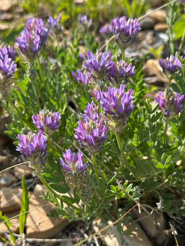
Ascending MilkvetchAstragalus laxmannii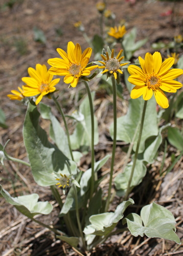
BalsamrootBalsamorhiza sagittataBee Balm (Wild Bergamot)Monarda fistulosa Matt Lavin, some rights reserved (CC BY)") Big SagebrushArtemisia tridentataBlanketflowerGaillardia aristata
Big SagebrushArtemisia tridentataBlanketflowerGaillardia aristata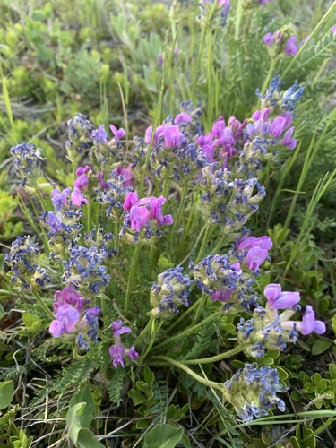
Boreale OxytropisOxytropis borealis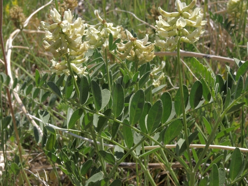
Canada Milk VetchAstragalus canadensis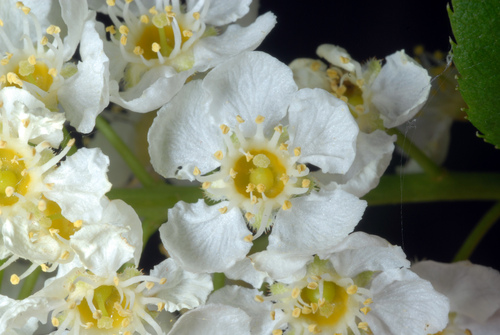
ChokecherryPrunus virginiana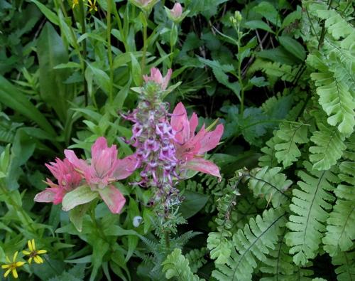
Common PaintbrushCastilleja miniata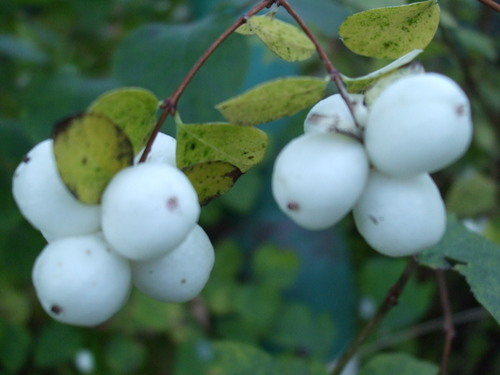
Common SnowberrySymphoricarpos albus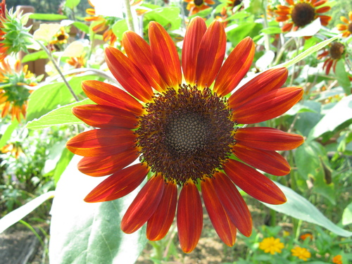
Common SunflowerHelianthus annuus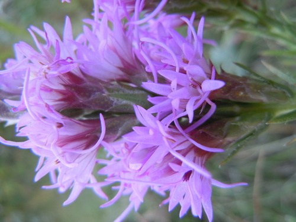
Dotted BlazingstarLiatris punctata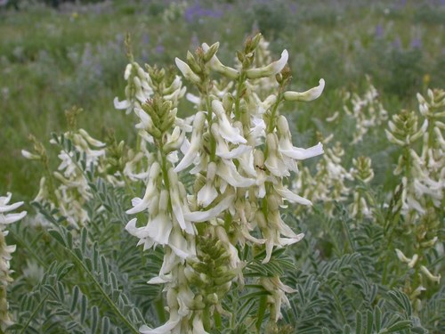
Drummond's MilkvetchAstragalus drummondiiEarly Yellow OxytropisOxytropis sericea Douglas Goldman, some rights reserved (CC BY-SA), uploaded by Douglas Goldman") FireweedChamaenerion angustifolium
FireweedChamaenerion angustifolium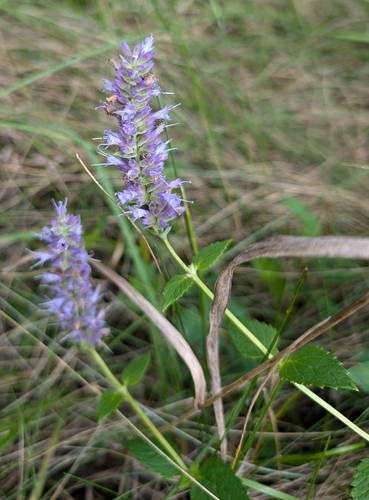
Giant HyssopAgastache foeniculum Matt Lavin, some rights reserved (CC BY-SA)") Golden BeanThermopsis rhombifolia
Golden BeanThermopsis rhombifolia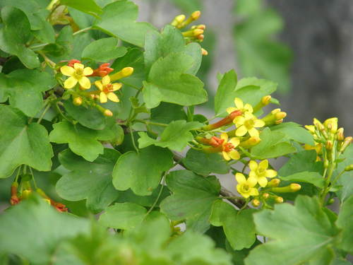
Golden Currant (Buffalo Currant)Ribes aureum Matt Lavin, some rights reserved (CC BY-SA)") Hairy Golden AsterHeterotheca villosa
Hairy Golden AsterHeterotheca villosa H. Zell, some rights reserved (CC BY-SA)") Leafy ArnicaArnica chamissonis
Leafy ArnicaArnica chamissonis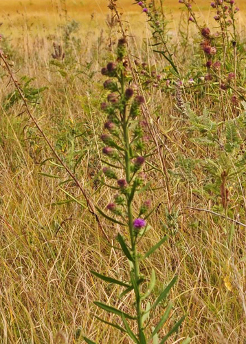
Meadow BlazingstarLiatris ligulistylis Matt Lavin, some rights reserved (CC BY-SA)") Missouri MilkvetchAstragalus missouriensis
Missouri MilkvetchAstragalus missouriensis Matt Lavin, some rights reserved (CC BY)") Mountain GentianGentiana calycosaNanking CherryPrunus tomentosa
Mountain GentianGentiana calycosaNanking CherryPrunus tomentosa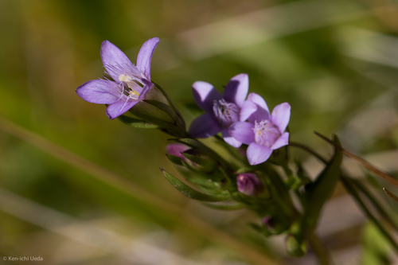
Northern GentianGentianella amarella Carrie Seltzer, some rights reserved (CC BY), uploaded by Carrie Seltzer") Northern HedysarumHedysarum boreale
Northern HedysarumHedysarum boreale Andrey Zharkikh, some rights reserved (CC BY)") Plains Prickly Pear CactusOpuntia polyacantha
Plains Prickly Pear CactusOpuntia polyacantha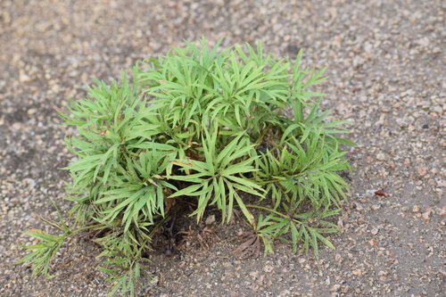
Prairie CrocusPulsatilla nuttalliana Joshua Mayer, some rights reserved (CC BY-SA)") Prairie RoseRosa arkansanaPurple ConeflowerEchinacea angustifoliaPurple PeavineLathyrus venosus
Prairie RoseRosa arkansanaPurple ConeflowerEchinacea angustifoliaPurple PeavineLathyrus venosus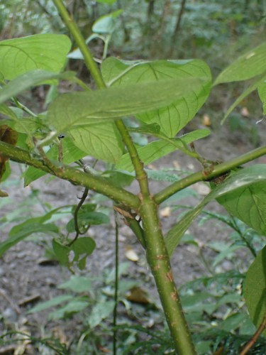
Red Osier DogwoodCornus sericeaRocky Mountain BeeplantPeritoma serrulata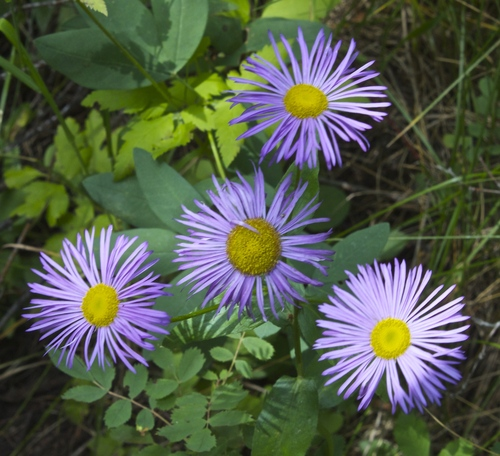
Showy FleabaneErigeron speciosus Douglas Goldman, some rights reserved (CC BY-SA), uploaded by Douglas Goldman") Showy MilkweedAsclepias speciosaShrubby CinquefoilDasiphora fruticosa
Showy MilkweedAsclepias speciosaShrubby CinquefoilDasiphora fruticosa David Anderson, some rights reserved (CC BY), uploaded by David Anderson") Silky LupineLupinus sericeus
Silky LupineLupinus sericeus Ryan Hodnett, some rights reserved (CC BY-SA)") SilverberryElaeagnus commutata
SilverberryElaeagnus commutata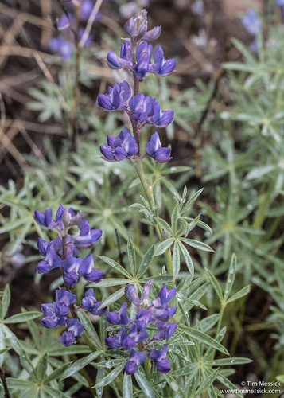
Silvery LupineLupinus argenteus Jason Alexander, some rights reserved (CC BY), uploaded by Jason Alexander") Slender Blue BeardtonguePenstemon procerus
Slender Blue BeardtonguePenstemon procerus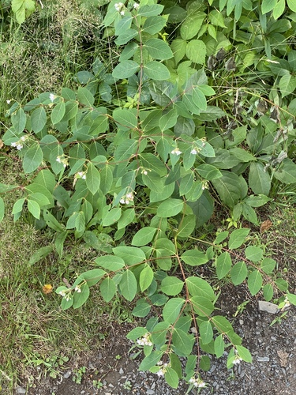
Spreading DogbaneApocynum androsaemifoliumSweet Broom (Alpine Sweetvetch)Hedysarum alpinum 2007 Dianne Fristrom, some rights reserved (CC BY-SA)") Tall LarkspurDelphinium glaucumUmbrella BuckwheatEriogonum umbellatum
Tall LarkspurDelphinium glaucumUmbrella BuckwheatEriogonum umbellatum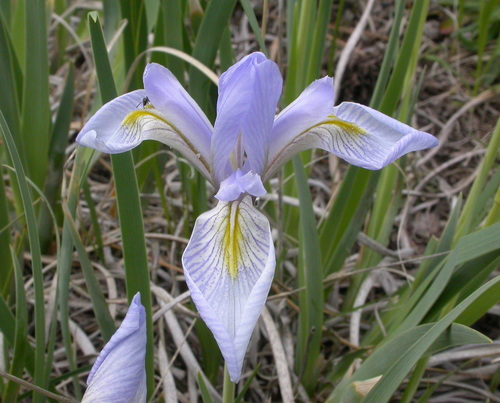
Western Blue IrisIris missouriensis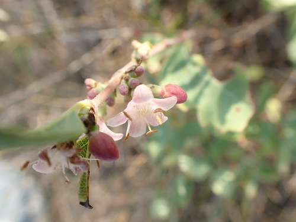
Western SnowberrySymphoricarpos occidentalis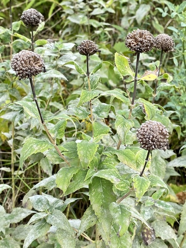
Wild BergamotMonarda fistulosaWild Black CurrantRibes americanum Pohled 111, some rights reserved (CC BY-SA)") Wild ChivesAllium schoenoprasum
Wild ChivesAllium schoenoprasum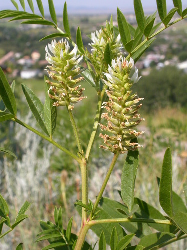
Wild LicoriceGlycyrrhiza lepidota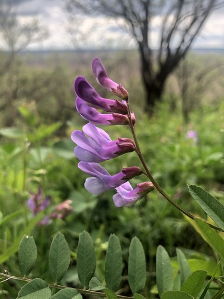
Wild VetchVicia americana Don Loarie, some rights reserved (CC BY), uploaded by Don Loarie") Woods' RoseRosa woodsii
Woods' RoseRosa woodsii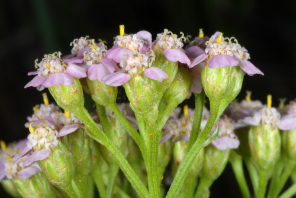
YarrowAchillea millefolium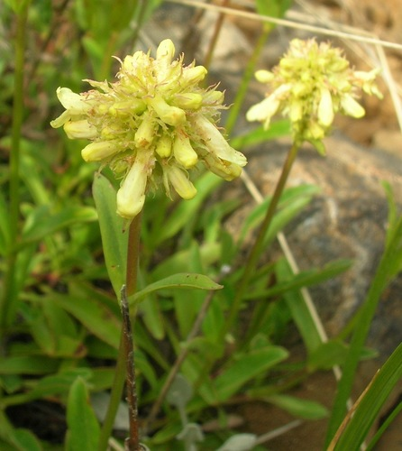
Yellow BeardtonguePenstemon confertus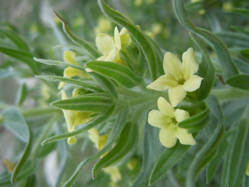
Yellow PucoonLithospermum ruderale aarongunnar, some rights reserved (CC BY), uploaded by aarongunnar") Yellow-flowered LocoweedOxytropis campestris
Yellow-flowered LocoweedOxytropis campestrisgathers pollen at
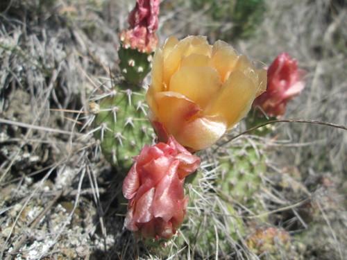
Brittle Prickly-pearOpuntia fragilisFireweedChamaenerion angustifoliumHairy Golden AsterHeterotheca villosa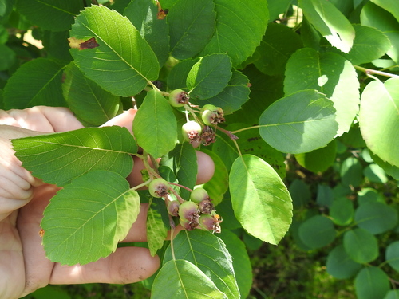
Saskatoon BerryAmelanchier alnifoliaSlender Blue BeardtonguePenstemon procerusTall LarkspurDelphinium glaucumYellow PucoonLithospermum ruderaleYellow-flowered LocoweedOxytropis campestris